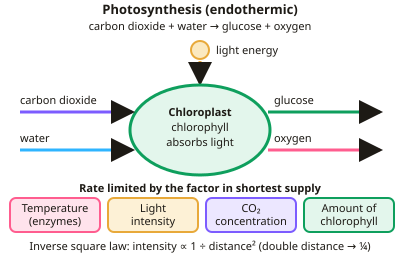

GCSE Biology · Topic 4
Bioenergetics
Bioenergetics is about how living things get and use energy. Plants capture energy from light, and every living cell releases energy from glucose.
We will look at photosynthesis and the factors that limit it, respiration with and without oxygen, and what happens in your muscles during exercise.
You will also meet the required practical on light intensity, the inverse square law, and how plants use mineral ions like nitrate and magnesium.
- 5 subtopics
- 168 questions
- Free: 4.1 notes and 10 questions
In this topic
- 4.1PhotosynthesisFree below · 39 questions
- 4.2Respiration and metabolismOpen in Full Marks · 31 questions
- 4.3Required/core practical: Effect of light intensity on the rate of photosynthesis (including inverse square law)Open in Full Marks · 36 questions
- 4.4Required/core practical: Measuring the rate of respiration (respirometer, germinating seeds, yeast, exercise)Open in Full Marks · 32 questions
- 4.5Plant mineral ion requirements and deficiency symptoms (nitrate, magnesium)Open in Full Marks · 30 questions
4.1 · Free notes
Photosynthesis

Key points
- Photosynthesis is an endothermic reaction: carbon dioxide + water → glucose + oxygen, using light energy absorbed by chlorophyll.
- Rate is affected by temperature, light intensity, carbon dioxide concentration and amount of chlorophyll. The factor in shortest supply is the limiting factor.
- Inverse square law: light intensity ∝ 1 ÷ distance².
- Glucose is used for respiration, starch storage, fats and oils, cellulose for cell walls, and amino acids (with nitrate ions) for proteins.
- Farmers use glasshouses to control conditions, balancing extra yield against costs.
In more detail
- Limiting factor: the factor in shortest supply limits the rate. On a graph the line levels off when a different factor (e.g. CO₂ or temperature) becomes limiting.
- Temperature and photosynthesis: the rate rises with temperature up to an optimum, then falls quickly because the enzymes that control photosynthesis denature.
- Worked inverse square example: moving a lamp from 10 cm to 20 cm doubles the distance, so light intensity falls to 1/2² = 1/4 of its value.
- Greenhouse economics: paraffin heaters raise temperature and add CO₂, and artificial lights extend the day. A farmer only adds them if the extra yield is worth more than the cost.
Practice
Photosynthesis: 10 questions
Pick an answer to check it, or open the answer for the explanation.
1. What are the reactants of photosynthesis?
- Glucose and oxygen
- Carbon dioxide and water
- Oxygen and water
- Glucose and water
Show answer
B: Carbon dioxide and water. Light energy converts CO₂ and water into glucose and oxygen.
2. Why is photosynthesis endothermic?
- It releases heat
- Energy is transferred from the environment
- It happens at night
- It uses oxygen
Show answer
B: Energy is transferred from the environment. Light energy is absorbed.
3. A lamp is moved from 10 cm to 20 cm away. Light intensity becomes:
- Half
- A quarter
- Double
- Unchanged
Show answer
B: A quarter. Inverse square law: doubling distance gives 1/4 intensity.
4. What is a limiting factor?
- The fastest reaction
- The factor in shortest supply that limits the rate
- A type of enzyme
- A product
Show answer
B: The factor in shortest supply that limits the rate. Increasing it increases the rate.
5. Why do plants absorb nitrate ions?
- To make glucose
- To make proteins from glucose
- For photosynthesis
- To store starch
Show answer
B: To make proteins from glucose. Nitrates are needed to make amino acids.
6. Which gas is a raw material for photosynthesis?
- Oxygen
- Carbon dioxide
- Nitrogen
- Hydrogen
Show answer
B: Carbon dioxide. Carbon dioxide combines with water to form glucose.
7. If light intensity is very low but CO₂ is plentiful, what limits photosynthesis?
- Temperature always
- Light intensity
- Water only
- Nothing limits it
Show answer
B: Light intensity. Light becomes the limiting factor in this situation.
8. Where in a plant cell does photosynthesis take place?
- Mitochondria
- Chloroplasts
- Vacuole
- Nucleus
Show answer
B: Chloroplasts. Chloroplasts contain chlorophyll, which absorbs the light energy. Mitochondria are the site of aerobic respiration, not photosynthesis.
9. A lamp 5 cm from pondweed gives 400 arbitrary units of light. What is the intensity at 20 cm from the lamp?
- 200 units
- 50 units
- 25 units
- 100 units
Show answer
C: 25 units. The distance is 4 times greater, so intensity falls by 4² = 16. 400 ÷ 16 = 25 units. Dividing by 4 (giving 100) ignores the inverse square law.
10. A pondweed releases 45 bubbles of oxygen in 3 minutes. What is the rate of photosynthesis in bubbles per minute?
- 135
- 48
- 42
- 15
Show answer
D: 15. Rate = number of bubbles ÷ time = 45 ÷ 3 = 15 bubbles per minute. Multiplying (135) uses the wrong operation.
Keep going in Full Marks
Full Marks has 39 questions on Photosynthesis (29 more than here), set out in practice levels. You also get notes and 3D models for all 5 subtopics of Bioenergetics, plus games, timed exams and past papers.
On your exam board
- AQATopic 3: Infection and response, Topic 4: Bioenergetics
- OCR ATopic B1: Cell level systems, Topic B6: Global challenges
- OCR BTopic B3: Living together – food and ecosystems, Topic B4: Using food and controlling growth
- EdexcelTopic 6: Plant structures and their functions, Topic 8: Exchange and transport in animals
- CambridgeTopic 6: Plant nutrition, Topic 12: Respiration